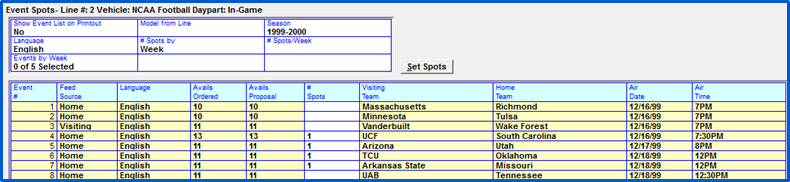

Sports Proposal and Order Entry
When creating a proposal or order, schedule lines for sports can be intermixed with schedule lines for non-sports. If a salesperson is defined as a salesperson s/he is only allowed to enter proposals, enter media inventory, and/or run reports.
Unlike Conventional Vehicles that are ordered by date, Sports Vehicles are ordered by an Event Schedule. This allows you to either order spots by Event, meaning a guaranteed number of spots will be placed in each game on the schedule, by Week, meaning a number of spots will air throughout the week but not necessarily in every game, or a mixture of both ways.
Line entry
To define a schedule line for an Event:
- Select the sport vehicle
- Select the daypart
- Select the spot length
When you tab to the weekly grid area, the Event Spots Line entry screen will appear along with the defined Event Schedule.
Entering Spots by Event
The top portion of the screen is where you define how and what you will be ordering in the events. Fill in each field and click “Set Spots” to create the spots in each event or week (depending how you sell).
Header Fields
- Show Event List on Printout: Answering Yes will result in a list of ordered events printing on the printed contract.
- Model From Line: You can copy an existing Schedule Line’s event spot placement by using the Model from Line, rather than entering the order information.
- Season: The current season is the season default, but you can select a different season from the dropdown if desired.
- Language: You can select the desired Language feed (if applicable).
- # Spots By: When ordering spots by Event, meaning a guaranteed number of spots will be placed in each game on the schedule, toggle to “Event” in the #Spots By field. (If spots are to distributed across events within a week, toggle to Week.)
- # Spots/Event: Enter the number of spots to air per Event.
- Events by #: Select the span of Events that will be purchased. For example, if they are only purchasing the first 100 Events, enter 1-100 in the ‘Events by #’ box.
- Events In/Out: If there is a pattern to your buy, such as the spots will air in every 3 Events then will be out of the following two Events, enter the pattern in the Events In and Out fields.
- Click “Set Spots” to apply the spots per Event or week to the Event schedule
Spots can also by entered manually by typing the number of spots in for each event in the “# Spots” field on the grid.
Entering Spots by Week
If you are ordering your spots by week, fill in the header following the instructions above, and toggle to Week in the “# Spots by” field.
- Enter the number of spots to be ordered per week in the #Spots/Week field.
- To select the weeks to be ordered from the drop down in the Events by Week field, click in the #Spots field, and the amount of spots you entered in the #Spots/Week field will populate. You can alter the spots for a specific week(s) by clicking in the #Spots field and overriding the spot count.
- Click Set Spots to apply the spots per Week to the Event schedule.
Rules about Spot Distribution
The spots ordered per week will be distributed between Events within the selected week to equal the number of spots per week ordered. For example, if 4 spots are ordered per week, and there are two events scheduled for that week, the system will try to place 2 spots in each game.
Spot Move Rules
The system follows strict rules when moving Contracted Spots, Makegoods, Outsides, and/or Fill spots within Sports events depending on how the spot/event was ordered.
Weekly Buys
- When a sports vehicle is purchased by week and an event’s date where the spots are scheduled gets changed to another week, if there are other events in the original week, the spots from the “by week” contract line will be rescheduled into the events in the original week. The contract event screen will be updated to reflect this change.
- Example:
- Event 1 and 2 are in the week of 12/10
- Event 2 is moved to the week of 12/17
- Spots ordered by week for Event 2 will stay in the week of 12/10, and be rescheduled in Event 1 (or other events in that week)
- If there is only one event in the week ordered AND that event’s date changes to another week, the spots will move with the event to the new date. The contract event screen will be updated to reflect the change
- Exception example:
- Event 1 is the only event in the week of 12/10
- Event 1 is moved to the week of 12/17
- Spots ordered by week for Event 1 will move with Event 1 to the week of 12/17
Event Buys
- When a sports vehicle is purchased by event, the spots will stay with the event when the event date changes
- Example:
- Event 1 and 2 are in the week of 12/10
- Event 2 is moved to the week of 12/17
- Sports ordered by event in Event 2 will move with Event 2 to the new date
Makegoods and Outside Spots
Event Date changes also affect Makegoods and Outsides.
- If an event that is moved to another week contains Makegood or outside spots from a Weekly Buy contract line, those spots will be set as Missed spots, regardless of whether there are other games in the new week or not
- If Weekly Buy spots had been moved into one event from another as Makegoods or Outsides, and the original event’s date is changed, the missed date of the original event will be updated on the MG/Outside spots
- Makegood and Outside spots originally ordered by Event (or from non-sports vehicles), will move with the event when it moves
Fill Spots
- For spots from “by week” contract lines, if an event gets moved to a different week and there is another game in the originally ordered week, contracted spots will move to the other game in the week and fill spots (created from “by week” contract lines) will be removed
- If there are no other events in the week, contracted and fill spots will move with the game to its new week
- For spots from “by event” contract lines (or fill spots from non-sports vehicles), the fill spots will move with the event to its new week
Entering a Proposal/Order using the Model Feature
You can copy an existing Schedule Line’s spot placement by using the Model from Line, rather than entering the order information.
To do so, click in the Model from Line field, and select the schedule line you wish to copy.
Click Set Spots, and the same spot placement will appear in the Event grid.

Ordering Multiple Seasons
Once you have defined your spots in your events for the current season, you can define spots for an additional season without leaving the Event Schedule. In order to do so, there must be more than one season defined for the vehicle, and you must use the same #Spots By (either Weeks or Event) order method.
After Setting the Spots, select the next season to define from the Season dropdown.
Enter the header information, click Set Spots to create the new season’s spots.
The spots for both seasons will appear on one schedule line on the proposal/order.
Viewing Air Time Inventory
Regardless of your selling method (Weeks or Events), once you click Set Spots, the amount of spots you entered in the header will appear in the Event Lines grid.
For ease of viewing, each week switches from black to green. Canceled Events appear in blue.
The Event Spots Line entry screen shows you a snapshot of available inventory. The Avails Ordered column shows the total available inventory for the specific daypart that was selected, and the Avails Proposal column shows the available inventory taking the proposal/order you are currently entering into account.

Modifying Spot Counts in the Past
When the User Options setting "change contracts in past with unbilled spots" is set to green for the signed on user, they will be able to change the spot count for a sports event that is in the past, if the vehicle is unbilled for that month. For example, if 5 spots were ordered, and 4 aired, and the user wished to remove one of the spots from the order after airing but before billing, if their User Options permissions allow it, they can do that by simply changing the spot count on the sports event grid for that contract line on the order. (Version 7.1 and above only.) If that User Options setting is not checked on, spot counts for past sports events cannot be modified.
Schedule Lines
Once you have ordered all of your spots and made any necessary alterations, click Done, and the total number of spots airing will show per week (regardless of whether you ordered your spots by Event or Week) on the schedule line on the main proposal/order screen.
Packaging Sports Vehicles
Sports vehicles can be packaged together, or with other types of vehicles, such as Conventional or Selling. You can create a Dynamic package in the Proposal/Order screen unique to a particular client, or a Standard package in the Rate Card screen to be used on any proposal/order, the same way you would create a package that included Conventional vehicles only.
When printing your proposal/order, you can choose whether to list the contents of the package, or show only the package line.
Differences in Proposal/Order Package Entry
Due to the nature of Sports Vehicles, certain features are deactivated when Sports Vehicles are added to a package.
- When modeling a contract, the Date Shift feature will not work with sports packages since events are sold by their schedules
- You will not be able to Clone a package containing sports vehicles
- The Sellout Button will not work with packages containing sports vehicles
- The Speed Bar feature will not work package containing sports vehicles
- The Flight button does not work with Sports Vehicles/Packages since it works with date, not events
Entering PSAs and Promos to be used with Sports Vehicles
You can define Promo's, PSA, Direct Response, and Per Inquire orders to schedule into Events or to bonus from in the Fill Screen.
- These contracts must have the Event defined on the contract
- When scheduling, these contracts are NOT added as fills but as regular PSA or Promos.
- The maximum number of PSA and Promo spots scheduled per hour must be defined for each vehicle if using the Fill screen
Adding Multimedia to Proposal/Order
The multimedia tab is used with sports vehicles as a way to track item inventory for such items as tickets, hospitality, signs, etc. The multimedia items that are available are defined on the Programming screen and can be associated with specific events, or be event independent.
For non-event independent items, select the sports vehicle and season in the header area, and enter an amount in the “Units/Event or Units” area, press Tab, and the Event Selection screen will appear. You can sort the events on this screen by clicking on any blue column header, such as by Feed Source to group all Home events together.
You can manually select the events to include by clicking in the Unit column, or you can use the “Selection” area radio buttons to enter the ordered amount.
- All: places an amount of units in each event on the schedule. You can manually remove certain events if necessary.
- From Air Time: adds inventory to each event that has Air Time ordered.
- Clear: clears the inventory from all selected events.
Press Done to return to the main Multimedia screen after entering the unit counts.
If the multimedia is not associated with an event, it will be listed as “Event-Ind.”, as shown in the picture below.
To add inventory to the contract for event-independent items, simply type the inventory count in the unit count field, then set the average rate, and total rate, or accept the default values.
Comments can be defined for each item if needed. To enter the comment, click in the C (comment) field, enter the comment, and press tab.
Multimedia items appear on the NTR tab with the NTR type of Multimedia. The Billing Date can be edited for event-independent inventory items (as they are independent of any event).
Multimedia Proposal/Order Example
Multimedia Reporting
Multimedia is reported on revenue reports with NTR items. If you want to see Multimedia only, use the Multimedia Billed and Booked Report.
Modeling Sports Events to a New Contract
When creating a new contract by modeling from an existing contract, on version 7.1 and above, sports events can also be modeled. On prior versions, only the sports vehicles/lines were modeled, not the actual events. On version 7.1 and above, there will be two options when modeling: “Retain line and events on and after date”, which will use the event numbers and new contract start date to determine which events should be copied to the new contract; and “Retain line, remove events”, which will work the way it worked on earlier versions, where the events are removed but the vehicle/line is retained.
When copying the events to the new contract, the event number is used to determine which events should be modeled, allowing events in one season to be copied to a new contract for the same event numbers for the same or a different season. For example, if the original contract had events 1 through 5, on various dates of Season 2018, and it was used to model a new contract for season 2019, with a start date in 2019, then the new contract would also have events 1 through 5, but for the season 2019 dates. Events can also be modeled from one season to the same season, also using the event dates and the contract start date.
To determine which season to use when copying events to a new contract, the system uses the new contract start date to find the earliest non-expired season. A non-expired season is a season where the season end date is after the contract start date – this prevents spots from seasons that have already ended from being copied to the new contract.
Here are several examples of how this works. For these examples, the modeled from contract has spots for season 2019, which has a start date of 8/1/19 and an end date of 12/31/19, and there is also a season 2020 in existence, with a start date of 8/1/20. (There is also a 2018 and 2021 season.)
Example 1 - When the new contract start date is the same as the modeled from contract start date: If the new contract start date is 8/1/19, then the events and spot counts from the original contract will be copied to the 2019 season, starting from 8/1/19, because the 2019 season is the non-expired season with the earliest season start date when compared to the new contract start date. The 2018 season will not be used because it ended before the new contract start date. The 2020 and 2021 seasons will not be used because the 2019 season is the non-expired season with the earliest season start date.
Example 2 – When the new contract start date is after the modeled from contract start date, but before the end of the modeled from contract season: If the new contract start date is 9/1/19, then the events and spot counts from the original contract will be copied to the 2019 season, starting from 9/1/19. (The event numbers will be used to determine which events to copy. For example, if the modeled from contract had 1 spot per event for events 1 through 10, and in the 2019 season, events 1 and 2 are prior to 9/1/19, then the new contract will have 1 spot for events 3 through 10.)
Example 3 – When the new contract start date is after the end of the modeled from contract season: If the new contract start date is 1/1/20, the events and spot counts from the original contract will be copied to the 2020 season, because the 2019 season expired on 12/31/19, and the non-expired season with the earliest start date is the 2020 season. The 2021 season will not be used because the 2020 season has an earlier start date.
Note: this feature only copies events from one season per line. In the unusual circumstances in which a single line has spots for multiple seasons, only the first season gets copied.